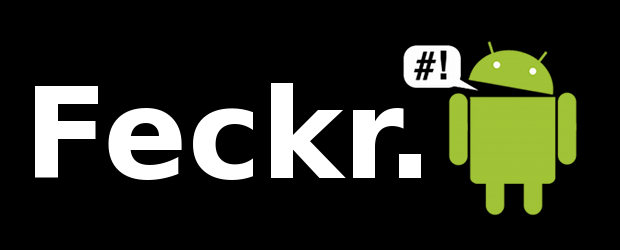

(2010) The game of secret tags and mischief

Feckr is an Android application that allows you to secretly “tag” bluetooth devices with messages. Tags are anonymous, permanent and public – every Feckr player can see all the tags for devices around them. Your nearby Bluetooth geography is a mess of phones, laptops, printers, speakers, headphones and other devices, tags get applied to a lot of things at once. In this way, Feckr is scattershot – when you create a new tag, it gets applied to everything nearby, whether you mean it or not.
Feckr was made as a provocation to explore mischief with technology for playful experiences, and also to make more of the shifting bluetooth geography we move through with mobile devices. The concept explores the idea of using mobile phones as a co-conspirator in a secret world of tags. As a game it builds on interest in gentle social mischief and "secret" social games. I’m really interested in the way games provide looser social rules that allow people to play around within that virtual environment. It’s also cool they way tags are publicly shared between players. There’s a secret club of Feckr players who don't know each other but can see the digital traces left in the world.
I introducted Feckr at MobileHCI 2010 in Lisbon, Portugal, as an interactive argument for "messing around" more with mobile technology
Conor, Shaun and I talk more about "messing around" with mobile apps in our chapter in Funology 2:
Ben Kirman, Conor Linehan and Shaun Lawson (2018) Reorienting Geolocation Data through Mischievous Design. In Mark Blythe and Andrew Monk (Eds) Funology 2: From Usability to Enjoyment. Springer.